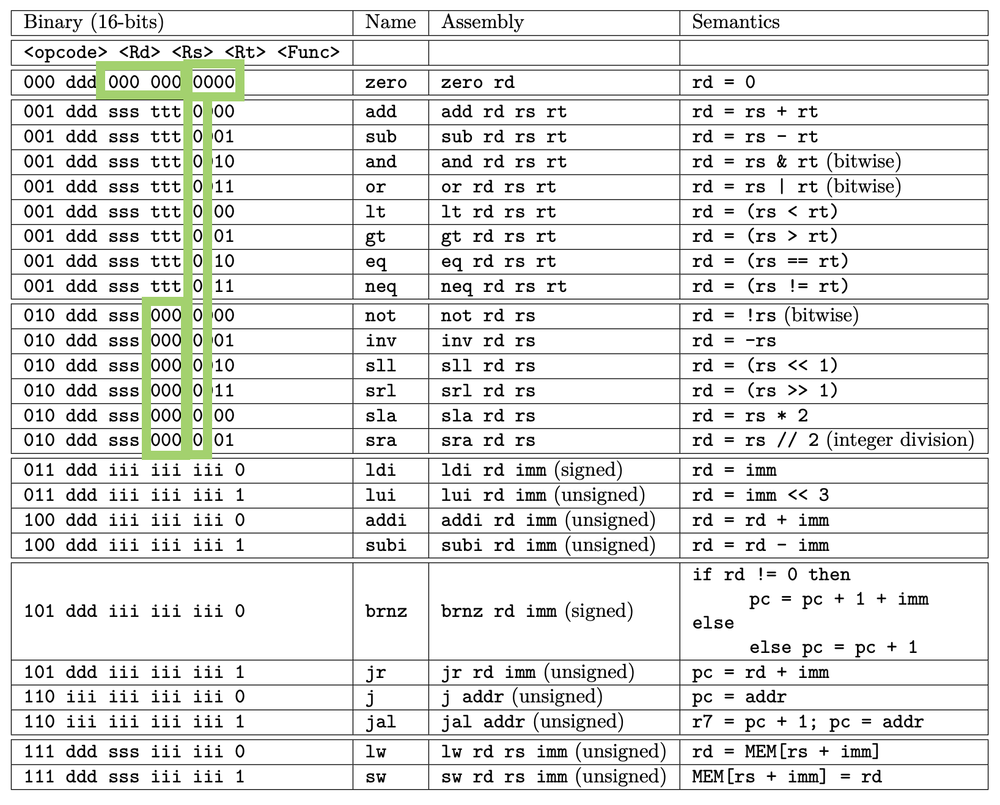

Titel: CA Project 7: Datapath in Use
Dit verslag werd opgesteld door:
De oplossing bestaat uit de volgende bestanden:
Exceptions: Voor de exceptions moesten we naar een paar gevallen kijken die specifiek 0 moesten zijn. Dat zijn de gevallen die met groen zijn omkaderd. We hebben getwijfeld of we in sommige gevallen waar rs en rt gebruikt worden, ook niet als exception r0 zouden hebben, maar deze vormen niet echt een probleem. Dus hebben we die niet genomen als uitzonderingen. Als er overflow aanwezig is in de ALU stopt het datapad ook met werken. In Logisim hebben we gebruik gemaakt van de OP code, de MSB van functie code, rs, rt en de functiecode. aan de hand van AND gates. We hebben alle exceptions die we vonden op deze compacte manier geïmplementeerd.  We hebben een zeer simpele code geschreven voor Fibonacci. De code wordt uitgelegd door de documentatie die erbij staat. Dit is een screenshot van onze data RAM na het inladen en runnen van onze fibonacci code. Alle waargeefbare waardes van Fibonacci in 12-bit zijn aanwezig op volgorde.